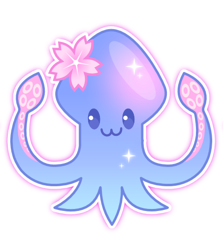

Eggie's

Shorts AnalyzerPaste a link or fill in the details, and I'll tell you what's working and what isn't. Use it before you post to plan it out, or after to figure out why something didn't pop off. ✨
Like this tool? 🐙
I built this for free for the VTuber + streamer community. If it's helped you, a tip on Ko-fi keeps it going and lets me keep adding new features.
🐙 Your creator profile saved in your browser Saved ✓
Tick this if you're a VTuber and I'll quietly fold #VTuber (and the usual streaming / clip identity tags) into every short you score — even when this particular short doesn't mention any of that in the title.
Upload your video (recommended)
Drop your video in and I'll watch the first 3 seconds — checking your motion, scene cuts, and audio to score your hook for you. Stays on your computer, nothing gets uploaded.
First time you upload a video, I download two small models (about ~310MB total) so I can see what's in your video and hear what's being said. After that they're cached forever and analysis is fast.
Tell me about your post
A single sentence is enough — I'll figure out hashtags, suggest titles, and write your post for you. Or fill in the details below for more accuracy.
I'll stick this at the end of your YouTube description automatically. Save multiple templates above (saved in your browser) so you can swap between them.
Add your numbers (optional)
If you've already posted this and have retention numbers from YouTube Studio, drop them in. If not, skip this — you'll still get a score from steps 1 and 2.